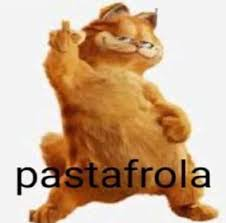

Con membrillo o dulce de leche,
que la merienda se aproveche.
Masa suave, enrejado con amor,
¡la pastafrola es el mejor sabor!
La Pastafrola es una de las tartas más clásicas y queridas de la cocina rioplatense, especialmente en Argentina, Uruguay y partes del sur de Brazil.
Tiene una base de masa dulce, un relleno generalmente de membrillo o batata, y el característico enrejado de tiras arriba.